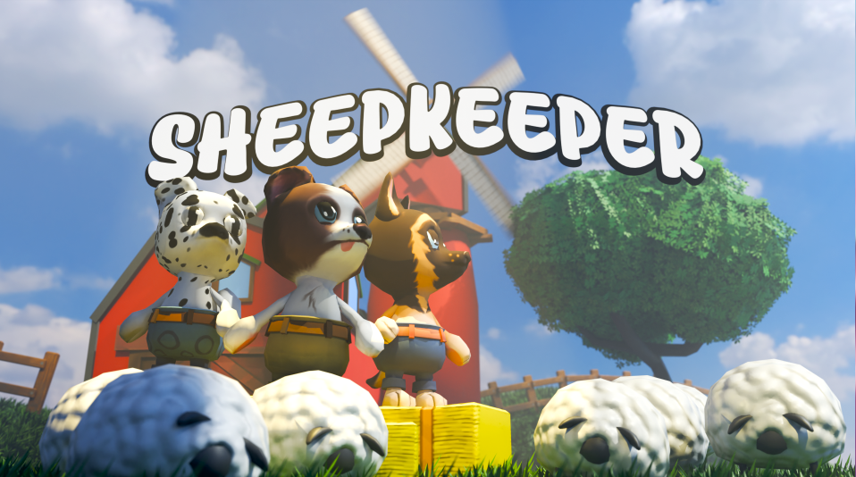

Sheepkeeper is a cozy local co-op herding game where you take on the role of cartoon sheepdogs and guide a flock of sheep through levels. Work together with another player, use barking and special abilities to control the flock, avoid environmental hazards, and bring as many sheep as possible safely to the barn. The more sheep you rescue, the more stars you earn!
Guide your flock from start to finish while keeping the sheep alive. Barking pushes the sheep away from your dog, allowing you to steer, split, gather, and redirect the flock. But be careful! Sheep can easily scatter or wander into danger. Cooperation and good positioning are the key to success.

Developed as part of a 12-person multidisciplinary team, working closely with designers to iterate on gameplay, AI behaviour and level interactions.
Early prototype establishing the base movement and decision loop for individual sheep.
How a designated leader sheep influences and directs the rest of the flock.
The underlying state transitions driving each sheep's behaviour and reactions.
sheep reaction feedbacks on player abilitys